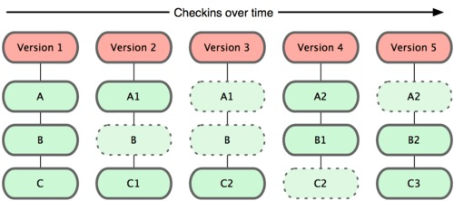
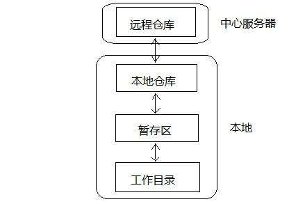

Git
一个分布式版本控制系统
制作人：柳巍
部门：软件研发部
日期：2017年12月20日
本节分享目标：初使Git,会将自己的项目添加到
Git版本控制中
CONTENT
一、版本控制系统大比拼
本地版本控制系统
本地版本控制系统解决了版本的管理问题，
再也不用时不时的把工程目录，通过手工拷贝的方式来存档了。
但本地版本控制系统的缺点是，无法解决多人协作的问题。

集中式版本控制系统(SVN)
集中化的VCS不但解决了版本控制问题，还可以多人协作。
但缺点是太依赖于远程服务器，服务器宕机后，会影响所有人的工作。
版本记录只保存在一台服务器上，会有数据丢失风险。
分布式版本控制系统(Git)
客户端并不只提取最新版本的文件，而是把代码仓库完整地镜像下来。
每一次的提取操作，实际上都是一次对代码仓库的完整备份。
Victor：Git
二、Git工作原理、工作流
记录文件整体快照
Git和其他版本控制系统的主要差别在于，
Git只关心文件数据的整体是否发生变化，
而大多数其他系统则只关心文件内容的具体差异。
SVN在每个版本中，以单一文件为单位，记录各个文件的差异：
Git在每个版本中，以当时的全部文件为单位，记录一个快照：
Git分层结构
文件的三种状态
在Git内都文件有三种状态：已提交（committed）
已修改（modified） 已暂存（staged）
已提交表示该文件已经被安全地保存在本地数据库中了；
已修改表示修改了某个文件，但还没有提交保存；
已暂存表示把已修改的文件放在下次提交时要保存的清单中。
Git基本工作流程：
- 在工作目录中修改某些文件。
- 对修改后的文件进行快照，然后保存到暂存区域。
- 提交更新，将保存在暂存区域的文件快照永久转储到Git目录中。
三、实例演示
1、在目录中创建新仓库
$ mkdir learngit
$ cd learngit
$ git init
2、检查当前文件状态
$ git status
$ cat>readme.txt
3、跟踪文件
四、Git可视化工具介绍:SourceTree
幻灯片背景
幻灯片包含在幕的一个有限区域中，默认情况下，允许它们适应任何视口和缩放一致性。你可以通过给你的 <section> 元素添加一个 data-background 属性来在幻灯片之外添加整个页面的背景。支持四种类型的背景： color, image, video 和 iframe。
幻灯片切换效果
局幻灯片切换效果是通过 transition 配置值来设定的。你可以通过指定<section>元素的 data-transition 属性来重写全局配置。
支持效果： none/fade/slide/convex/concave/zoom
嵌入式多媒体
嵌入的 HTML5 <video>/<audio> 以及 YouTube 内联框架将会在你从一个幻灯片导航离开的时候自动暂停。这可以通过给你的元素指定一个 data-ignore 属性来禁止。
内部链接
在幻灯片之间链接是很容易的。下面的例子中，第一个链接指向了另外一个幻灯片的索引，第二个链接指向了另外一个幻灯片的ID属性 (<section id="some-slide">)：
链接到第4张幻灯片概览与全屏模式
点击 "Esc" 或 "o" 键来切换概览模式。当你在这种模式下的时候，你仍然可以在幻灯片之间导航。
只需要在你的键盘上点击 »F« 按键即可进入全屏模式。点击 »ESC« 按键推出全屏模式。
嵌入图片与链接

点击查看教程